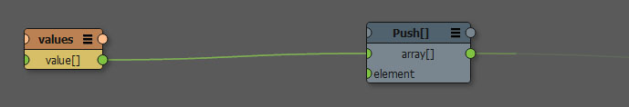
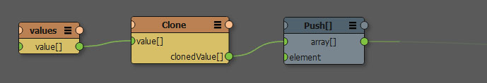

Reference counted data structures¶
To understand the issues with reference counted data structures in Canvas two things are relevant:
- KL objects, arrays and dictionaries are reference counted
- Canvas passes data between nodes without cloning
This is not a problem for simple values, such as Scalar or String, or structs such as Vec3 for example, because they are copied. Copying a reference counted container however doesn’t result in a deep copy, so the referenced data won’t be cloned. This means that when passing KL objects or arrays through Canvas you have to be very conscious on when you should use Caches or Variables or Clone nodes.
In the example below the array is changed even though we are not setting it in the variable again. This is due to the fact that the array is reference counted.
To make this graph behave as initially expected you need to add a clone node. That way the array is cloned after being accessed and the original array in the variable won’t change.
